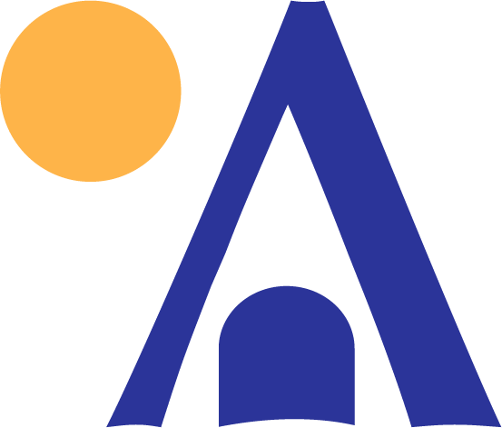

Ang kwento namin
Kabina means cabin. Aplaya means shore. Put them together and you have exactly what we are: cabins by the shore of Laguna de Bay.
Kabina sa Aplaya – RJFLn Resort is a resort in Brgy. Lubo, Jala-jala, Rizal. Our three A-frame cabins. Makiling, Sembrano, and Banahaw, each named after a mountain that watches over the lake, sit around a pool that looks out to the water and the scenic silhouette of Mt. Banahaw.
We built this place for slow mornings, long swims, videoke nights, and bonfire kwentuhan. Whether you're here for a day tour, an overnight stay, or you've booked the whole resort for a celebration, welcome. Kita-kits sa aplaya!
The lake
Laguna de Bay is the Philippines' largest lake, and Jala-jala is a peninsula reaching right into it. The aplaya is literally at our doorstep.
The mountains
Mt. Banahaw rises across the water to the south, with Mt. Sembrano and Mt. Makiling nearby, the three peaks our kabinas are named after.
The resort
Three cabins, one pool, and grounds that never feel crowded. Book one kabina or take the whole place exclusively.
Mabini St., Brgy. Lubo, Jala-jala, Rizal 1990, Philippines
By car: Take Manila East Road through Antipolo–Teresa–Morong–Tanay–Pililla, then follow the Jala-jala road into the peninsula until Brgy. Lubo. From Metro Manila, plan for roughly 2.5–3 hours depending on traffic.
Via Laguna: Coming from the south, you can route through Calamba–Sta. Cruz–Pakil–Pangil–Siniloan–Famy, then cross to Pililla and into Jala-jala.
Landmark: We're along Mabini St. by the lakeshore in Brgy. Lubo. Message us on Facebook if you need turn-by-turn help, locals know us!

Book right here, or find us on Airbnb and Booking.com.
Check availability & book